A Arte de Apontar Lápis (Estilos & Técnicas)
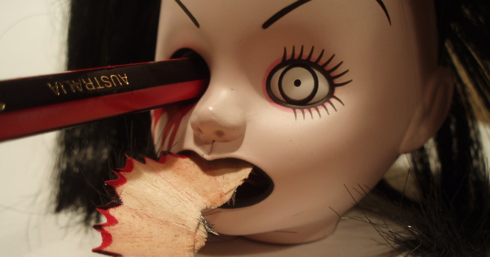
Índice
Bem-vindo ao mundo de apontar lápis — isso pode parecer um assunto sem graça, mas há muito mais nisso do que você imagina.
Existem vários estilos e métodos diferentes de apontar que todo bom artista deveria conhecer.
O segredo é usar o estilo certo na hora certa.
Estilos de ponta
Existem quatro pontas principais para escolher; a que você vai escolher vai depender do tipo de lápis que você usa e do estilo do seu desenho.
Ponta padrão
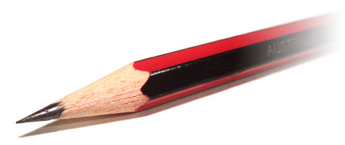
Todo mundo conhece esta ponta; o seu formato cônico característico é o mais comum e o mais versátil de todos os estilos de apontar.
É uma boa opção para tudo por vários motivos:
- ✓ Funciona para a maioria dos tipos de lápis.
- ✓ Apontadores padrão são fáceis de encontrar em quase qualquer lugar.
- ✓ Muitas vezes, os lápis já vêm apontados com a ponta padrão.
Se você não tem um estilete, provavelmente não tem escolha, esta é a ponta certa para você.
No entanto, existem algumas desvantagens neste estilo:
- ✗ A ponta padrão pode ficar cega rapidamente, especialmente se você estiver usando lápis mais macios, como carvão.
- ✗ Em desenhos maiores, você vai se pegar apontando o lápis constantemente, o que não é o ideal se estiver desenhando poses curtas de modelo vivo.
- ✗ Lápis de qualidade inferior frequentemente contêm uma mina (núcleo ou miolo) de grafite com um diâmetro menor; se esta mina estiver ligeiramente descentralizado, você verá que a madeira fica tão próxima da ponta de um dos lados que o torna quase inutilizável. Isso pode ser muito frustrante.
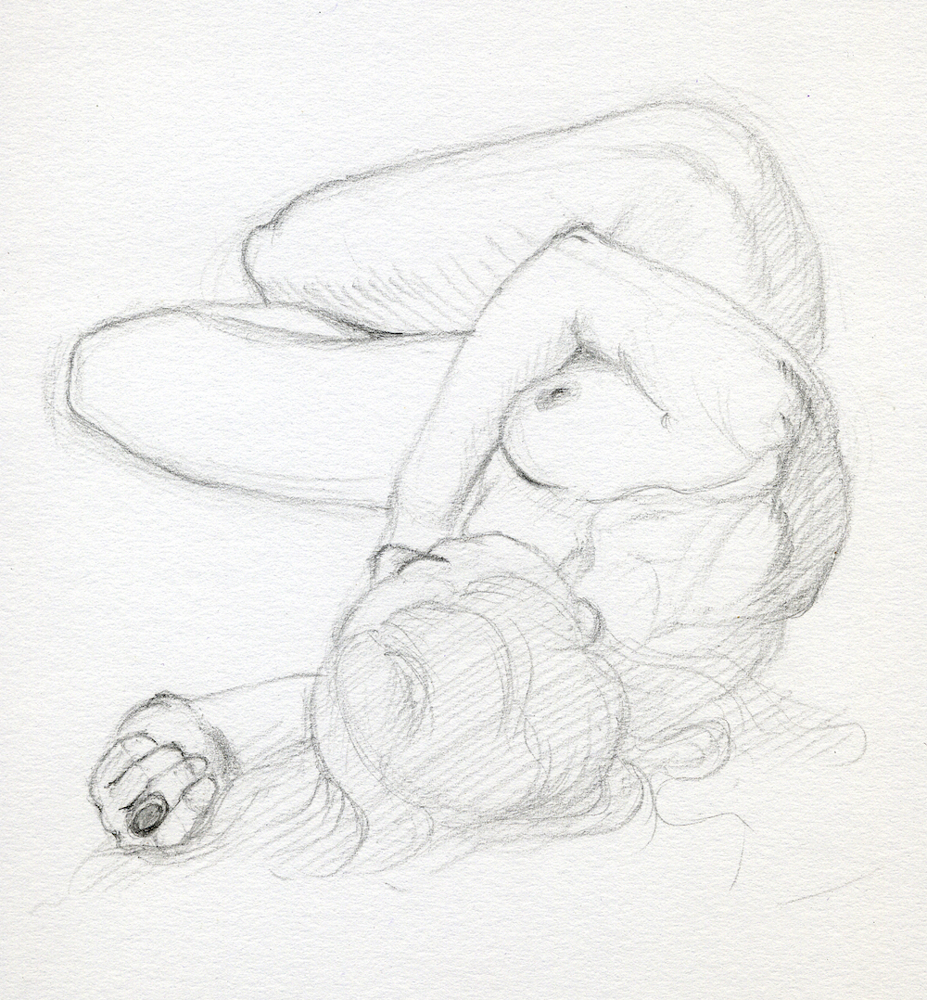
Este é um dos meus desenhos de modelo vivo que desenhei com um lápis de ponta cônica padrão.
Ponta em cinzel
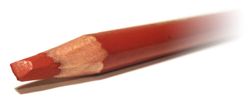
Este é um estilo raramente visto onde a ponta do lápis é cortada com um estilete em forma de cinzel (chanfrada).
O principal benefício do cinzel é a sua capacidade de desenhar múltiplos tipos de marcas no papel:
- ✓ Linhas largas e suaves a partir das faces planas. Estas linhas suaves são ótimas para a construção inicial e bruta (esboço) de um desenho; basta virar o lápis de lado para obter precisão extra quando precisar.
- ✓ Linhas finas e escuras a partir das arestas afiadas.
- ✓ Linhas em estilo caligrafia quando a borda reta é usada em ângulo.
Outra característica interessante da ponta em cinzel é a sua propriedade de autoapontamento. Ao usar o cinzel pelas faces planas, isso ajuda a manter a aresta afiada. Isso significa que você pode passar mais tempo desenhando e menos tempo apontando — ótimo para lápis mais macios!
Existem apenas alguns pequenos problemas:
- ✗ O formato em cinzel pode ser difícil de dominar, porque ao desenhar com a face plana é fácil rolar acidentalmente o pulso e desgastar os cantos do formato.
- ✗ Também pode dar um pouco de trabalho esculpir o cinzel para começar.
Se você conseguir superar esses pequenos incômodos, então a ponta em cinzel pode ser para você.
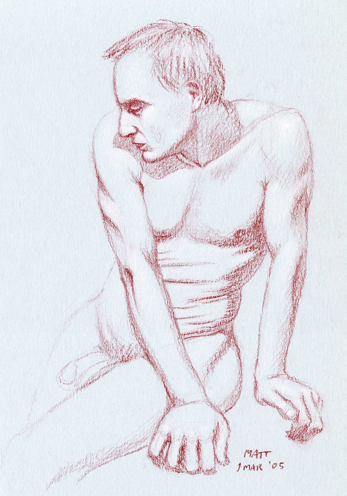
Desenhei este modelo vivo com um lápis de giz vermelho que cortei em ponta de cinzel.
Ponta em agulha
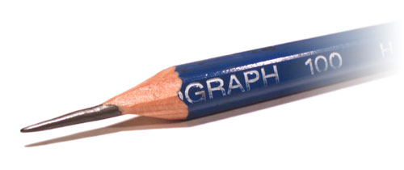
Este é um modelo especializado que é esculpido com uma lâmina até formar uma ponta côncava bem afiada. A ideia é que uma ponta tão fina consiga se desgastar bastante antes de ficar cega demais para o uso.
Aqui está o porquê de eu gostar desse estilo de ponta:
- ✓ Controle preciso sobre as linhas e detalhes extrafinos. Ótimo para perfeccionistas, como eu!
- ✓ Menos tempo apontando. A ponta longa vai durar bastante tempo se você for cuidadoso com ela.
Mas ela não deixa de ter suas desvantagens:
- ✗ A ponta fina é propensa a quebrar, por isso só é adequada para lápis mais duros.
- ✗ Ela só consegue fazer um tipo de traço, uma linha fina, então não há muita flexibilidade aqui.
- ✗ Preencher grandes seções de tom sólido pode consumir muito tempo, então você fica limitado a desenhos menores, a menos que queira enlouquecer!
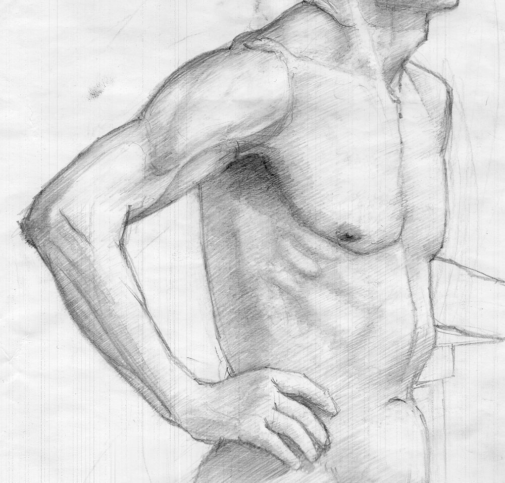
Neste desenho de modelo vivo, você pode ver o detalhe fino que se consegue obter com um lápis apontado em forma de agulha. Infelizmente, você também pode ver algumas linhas verticais; elas foram causadas pelo meu scanner antigo :(
Ponta em bala
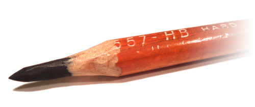
Esta é a minha maneira favorita de apontar lápis e um método que eu mesmo desenvolvi.
Neste estilo, a madeira é removida do último centímetro do lápis e depois a ponta do grafite é apontada no formato de uma bala.
Dois tipos de traços podem ser feitos com esse design:
- • Uma linha suave a partir da lateral da bala.
- • Uma linha nítida (fina) a partir da ponta.
Além disso, ela tem algumas boas propriedades:
- ✓ Tem uma propriedade de autoapontamento como a ponta em cinzel.
- ✓ Funciona para lápis duros e macios, por isso é muito versátil.
- ✓ Dura muito tempo, então você não precisará apontar constantemente.
Não existem muitas desvantagens neste design:
- ✗ Pode levar um minuto ou dois para esculpir o formato, mas não é tão difícil quanto a ponta em cinzel.
Se você ainda não tentou este método de apontar antes, eu recomendo fortemente que faça uma tentativa.
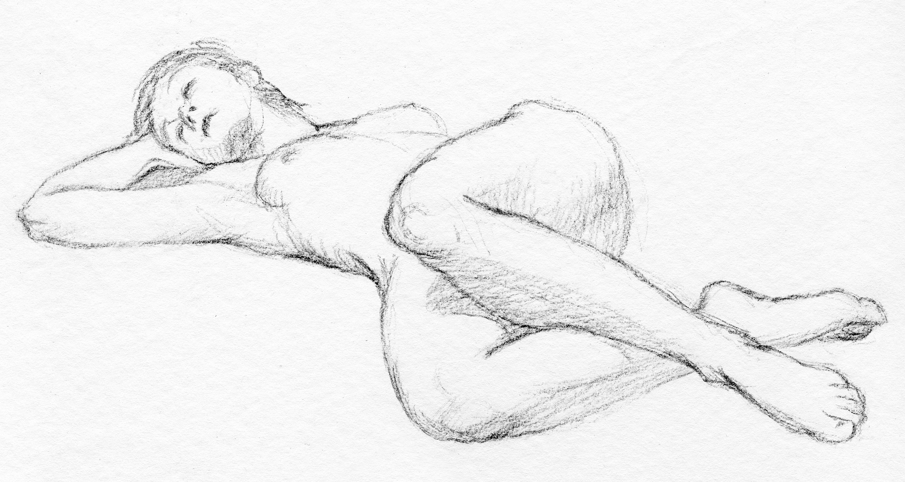
Adoro usar a ponta em bala nos meus lápis de carvão porque ela me dá a maior quantidade de controle e flexibilidade enquanto estou desenhando modelos vivos.
Métodos de apontar lápis
Aqui estão os principais métodos de apontar que eu utilizo:
Apontadores tradicionais
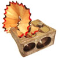
É sempre útil ter um desses apontadores tradicionais no seu estojo como um reserva confiável.
Se você gosta de experimentar vários materiais diferentes, é uma boa ideia garantir aqueles apontadores duplos que possuem dois tamanhos distintos; eles podem ser de metal ou plástico. Existem muitos lápis excelentes por aí que são um pouco maiores que o normal, então, se você esquecer o seu estilete, ainda poderá apontá-los com um desses caras.
Apontar com estilete
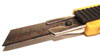
O estilete é o método mais versátil para apontar um lápis porque você pode usá-lo para esculpir qualquer estilo de ponta. Pode exigir um pouco de prática, mas é uma habilidade útil para um artista dominar.
Para apontar um lápis com estilete, segure-o em uma mão sobre uma lixeira com a ponta virada para longe de você. Com a outra mão, corte suavemente em uma direção para fora, removendo finas lascas de madeira e grafite. Gire o lápis entre os cortes para moldar uma ponta uniforme. A maioria dos estiletes afiados pode ser usada.
Se a mina ou o grafite continuar quebrando, tente cortar fatias ainda mais finas por vez.
Usando lixa
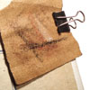
Este é um truque bem legal que eu uso regularmente.
Tente prender um pedaço pequeno de lixa na sua prancheta de desenho e, se o seu lápis começar a ficar um pouco cego, basta passá-lo sobre o papel algumas vezes para trazer a ponta de volta. Isso é especialmente útil durante desenhos rápidos de modelo vivo, quando não há tempo para pegar o seu apontador.
Lápis envoltos em papel
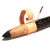
Alguns lápis vêm com seu próprio método de apontar embutido!
Com os lápis envoltos em papel (dermatográficos), basta puxar a cordinha para cortar um novo segmento de papel e depois desenrolá-lo. Isso é ótimo para materiais que fazem sujeira, como o carvão.
O melhor desse método é que você fica com o lápis apontado no estilo ponta em bala, muito bom!
Apontadores mecânicos
Os apontadores mecânicos (de manivela) funcionam brilhantemente, mas só conseguem cortar a ponta cônica padrão.
Para usar um apontador mecânico, basta puxar a parte frontal para fora, travar o seu lápis no lugar e depois girar a manivela para obter uma ponta perfeita sem esforço. Eles são tão divertidos de usar que talvez você precise comprar lápis com mais frequência... e nem me faça falar sobre as variações elétricas! ;)
Apontadores decorativos
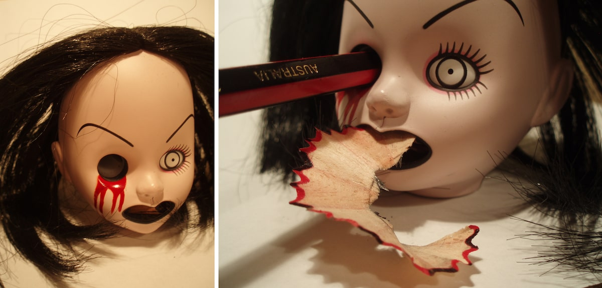
Meu apontador 'Living Dead Dolls' da personagem Sadie.
Este é o meu apontador de lápis favorito. É a cabeça de uma boneca e você enfia o lápis no olho dela para apontar. Tem um pequeno botão na parte de trás do pescoço que empurra as aparas (raspas) para fora da boca!
Infelizmente, não é muito prático e só corta na ponta cônica padrão :(
Desenhando com lápis curtos
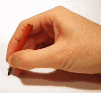
A maioria das pessoas joga fora os seus lápis quando eles ficam muito curtos, mas eu acho que eles são mais fáceis de usar.
Ao desenhar, eu seguro o meu lápis de duas maneiras diferentes:
- • Pela lateral: para linhas suaves.
- • Pela ponta: para linhas finas mais escuras.
Estou constantemente alternando entre essas duas posições enquanto desenho, e a minha mão fica no caminho se eu estiver usando um lápis longo. Com um lápis curto, consigo mudar de forma fluida e rápida da lateral para a ponta, e vice-versa, sem restrições. É uma coisa fantástica!
Acho os lápis mais curtos bem melhores, tanto que comecei a cortar meus lápis novos ao meio logo após comprá-los. Você ganha dois pelo preço de um dessa forma!
// Um conselho: após o corte, certifique-se de anotar a graduação da dureza nas extremidades; caso contrário, você vai acabar com um monte de lápis de graduação misteriosa!
Este artigo é uma tradução livre e integrada do conteúdo original publicado por Matthew James Taylor.
Matthew James Taylor é um artista, ilustrador e designer australiano, amplamente conhecido por compartilhar técnicas práticas de desenho de modelo vivo, ilustrações em aquarela e arte vetorial em seu blog pessoal, além de criar recursos e ferramentas utilitárias para criadores independentes.